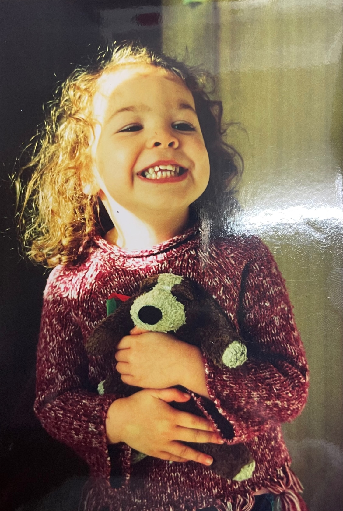
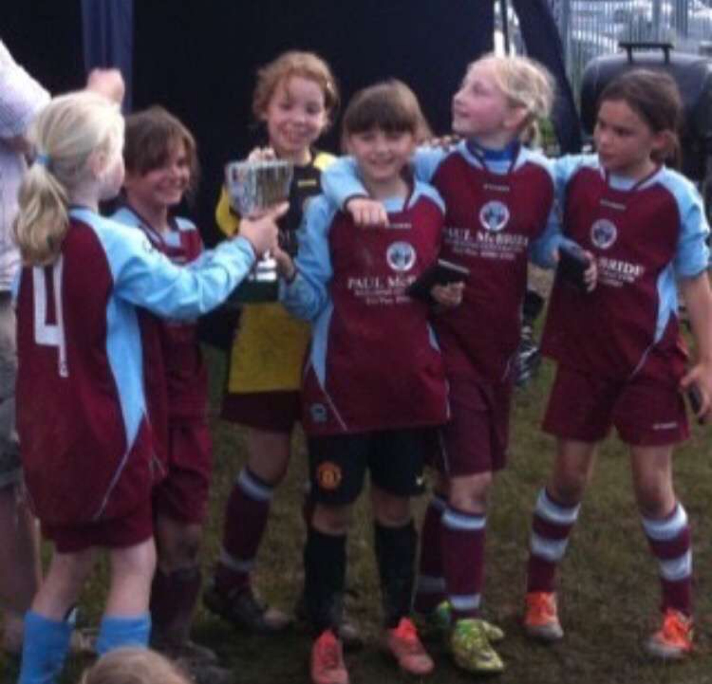
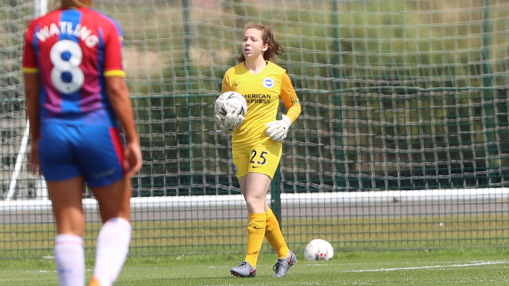
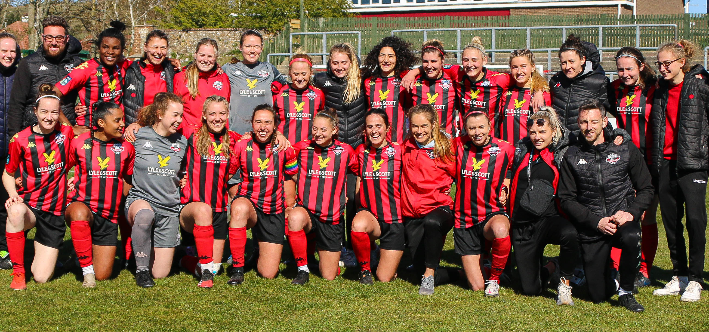
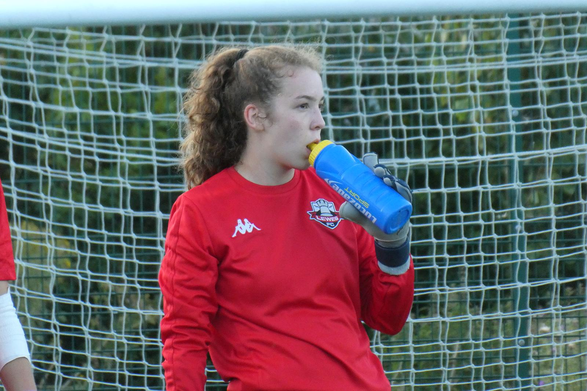
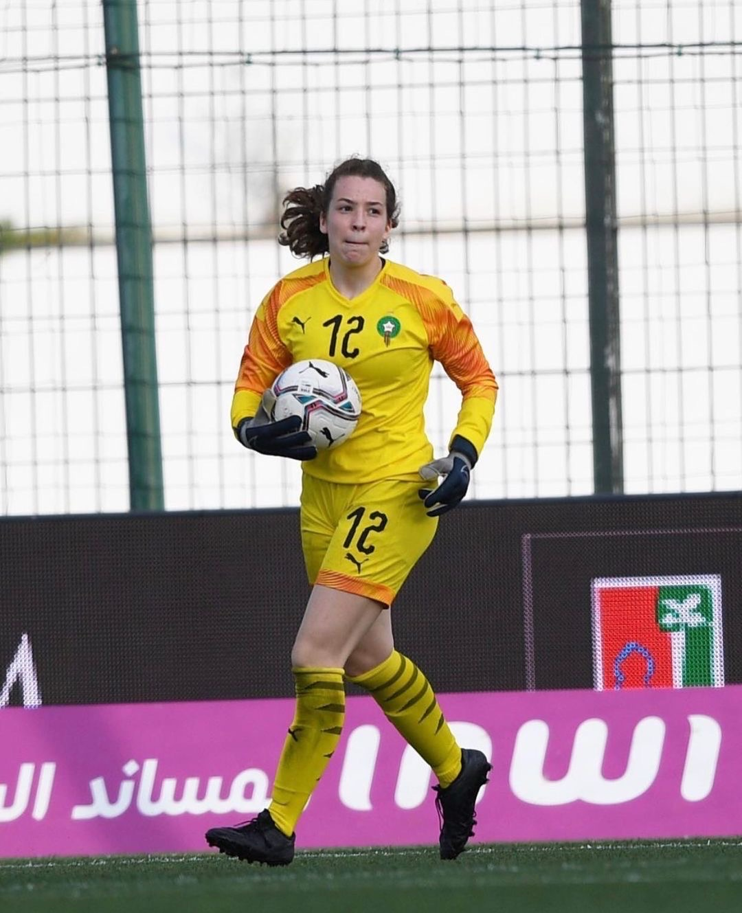
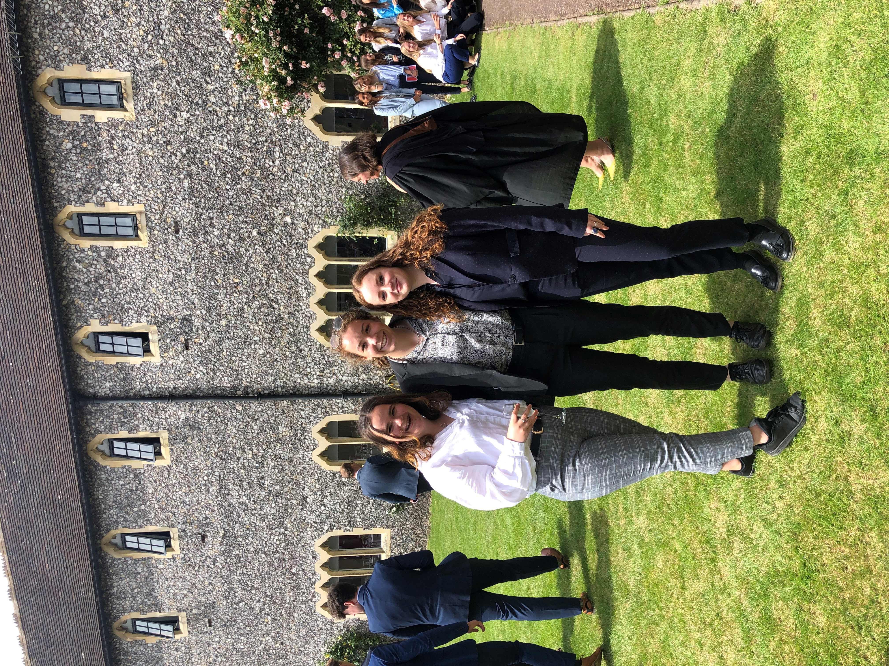
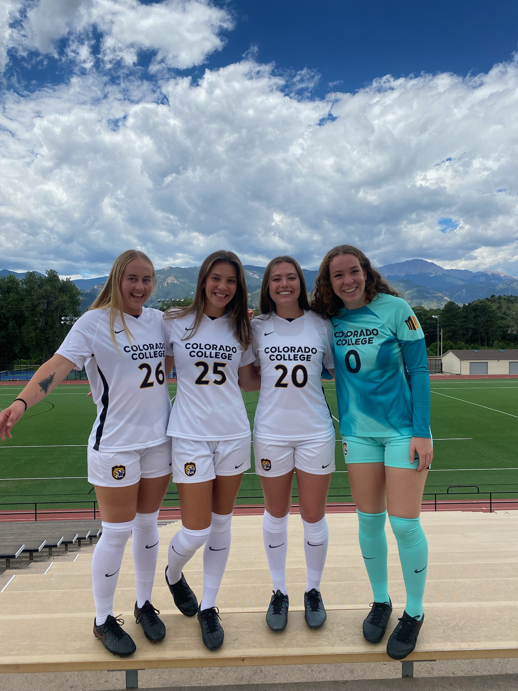

<!DOCTYPE html>
<html>
<head>
    
    <meta http-equiv="content-type" content="text/html; charset=UTF-8" />
    
        <script>
            L_NO_TOUCH = false;
            L_DISABLE_3D = false;
        </script>
    
    <style>html, body {width: 100%;height: 100%;margin: 0;padding: 0;}</style>
    <style>#map {position:absolute;top:0;bottom:0;right:0;left:0;}</style>
    <script src="https://cdn.jsdelivr.net/npm/leaflet@1.9.3/dist/leaflet.js"></script>
    <script src="https://code.jquery.com/jquery-3.7.1.min.js"></script>
    <script src="https://cdn.jsdelivr.net/npm/bootstrap@5.2.2/dist/js/bootstrap.bundle.min.js"></script>
    <script src="https://cdnjs.cloudflare.com/ajax/libs/Leaflet.awesome-markers/2.0.2/leaflet.awesome-markers.js"></script>
    <link rel="stylesheet" href="https://cdn.jsdelivr.net/npm/leaflet@1.9.3/dist/leaflet.css"/>
    <link rel="stylesheet" href="https://cdn.jsdelivr.net/npm/bootstrap@5.2.2/dist/css/bootstrap.min.css"/>
    <link rel="stylesheet" href="https://netdna.bootstrapcdn.com/bootstrap/3.0.0/css/bootstrap.min.css"/>
    <link rel="stylesheet" href="https://cdn.jsdelivr.net/npm/@fortawesome/fontawesome-free@6.2.0/css/all.min.css"/>
    <link rel="stylesheet" href="https://cdnjs.cloudflare.com/ajax/libs/Leaflet.awesome-markers/2.0.2/leaflet.awesome-markers.css"/>
    <link rel="stylesheet" href="https://cdn.jsdelivr.net/gh/python-visualization/folium/folium/templates/leaflet.awesome.rotate.min.css"/>
    
            <meta name="viewport" content="width=device-width,
                initial-scale=1.0, maximum-scale=1.0, user-scalable=no" />
            <style>
                #map_033ba77642977e4e6f7594959ba56c6c {
                    position: relative;
                    width: 100.0%;
                    height: 100.0%;
                    left: 0.0%;
                    top: 0.0%;
                }
                .leaflet-container { font-size: 1rem; }
            </style>
        
</head>
<body>
    
    
            <div class="folium-map" id="map_033ba77642977e4e6f7594959ba56c6c" ></div>
        
</body>
<script>
    
    
            var map_033ba77642977e4e6f7594959ba56c6c = L.map(
                "map_033ba77642977e4e6f7594959ba56c6c",
                {
                    center: [50.95843, -0.13287],
                    crs: L.CRS.EPSG3857,
                    zoom: 10,
                    zoomControl: true,
                    preferCanvas: false,
                }
            );

            

        
    
            var tile_layer_2525c1029b55e32d0ae8a065ae73f2fe = L.tileLayer(
                "https://tile.openstreetmap.org/{z}/{x}/{y}.png",
                {"attribution": "\u0026copy; \u003ca href=\"https://www.openstreetmap.org/copyright\"\u003eOpenStreetMap\u003c/a\u003e contributors", "detectRetina": false, "maxNativeZoom": 19, "maxZoom": 19, "minZoom": 0, "noWrap": false, "opacity": 1, "subdomains": "abc", "tms": false}
            );
        
    
            tile_layer_2525c1029b55e32d0ae8a065ae73f2fe.addTo(map_033ba77642977e4e6f7594959ba56c6c);
        
    
            var marker_9ac158f9590f54743b9c08b26411c83c = L.marker(
                [51.0068116394, -0.10650957396],
                {}
            ).addTo(map_033ba77642977e4e6f7594959ba56c6c);
        
    
            var icon_54e3893511b6d0574d3f27ebc867bf93 = L.AwesomeMarkers.icon(
                {"extraClasses": "fa-rotate-0", "icon": "info-sign", "iconColor": "white", "markerColor": "blue", "prefix": "glyphicon"}
            );
            marker_9ac158f9590f54743b9c08b26411c83c.setIcon(icon_54e3893511b6d0574d3f27ebc867bf93);
        
    
        var popup_3e21c7264f6e41c6f8460f79bbff1cb3 = L.popup({"maxWidth": "100%"});

        
            
                var html_3c22dd4823362431d270b09a5ca82004 = $(`<div id="html_3c22dd4823362431d270b09a5ca82004" style="width: 100.0%; height: 100.0%;">                 <h1><b> 2002 </h1></b>                 I was born 8th November 2002. I grew up in Haywards Heath as an only child. My Dad is                  English, and my Mum is French, with Moroccan heritage.                                   </div>`)[0];
                popup_3e21c7264f6e41c6f8460f79bbff1cb3.setContent(html_3c22dd4823362431d270b09a5ca82004);
            
        

        marker_9ac158f9590f54743b9c08b26411c83c.bindPopup(popup_3e21c7264f6e41c6f8460f79bbff1cb3)
        ;

        
    
    
            var marker_a48d48340a134afab709e36b5effe0d2 = L.marker(
                [50.95843, -0.13287],
                {}
            ).addTo(map_033ba77642977e4e6f7594959ba56c6c);
        
    
            var icon_bb9c61f03137bc9beda8b9eceedb162d = L.AwesomeMarkers.icon(
                {"extraClasses": "fa-rotate-0", "icon": "info-sign", "iconColor": "white", "markerColor": "blue", "prefix": "glyphicon"}
            );
            marker_a48d48340a134afab709e36b5effe0d2.setIcon(icon_bb9c61f03137bc9beda8b9eceedb162d);
        
    
        var popup_03d29501bab8e1ec83d1da77342d8d9e = L.popup({"maxWidth": "100%"});

        
            
                var html_59371322de80908998bd11d5d14d7d74 = $(`<div id="html_59371322de80908998bd11d5d14d7d74" style="width: 100.0%; height: 100.0%;">                 <h1><b> 2010- 2015 </h1></b>                 I started my football career at the grassroots club Southdowns FC at around 7 years old. I have                  always                  been a goalkeeper. This was my first experience of being part of a team, and I think                   showed me the importance of friendship and collaboration. My love for football started here                  and has inspired a lot of my subsequent decisions in life.                  Here is a photo of me winning my first ever trophy!-                                  </div>`)[0];
                popup_03d29501bab8e1ec83d1da77342d8d9e.setContent(html_59371322de80908998bd11d5d14d7d74);
            
        

        marker_a48d48340a134afab709e36b5effe0d2.bindPopup(popup_03d29501bab8e1ec83d1da77342d8d9e)
        ;

        
    
    
            var marker_ee2d9cc34c6b066ae06af5d98c7de469 = L.marker(
                [51.01073, -0.14068],
                {}
            ).addTo(map_033ba77642977e4e6f7594959ba56c6c);
        
    
            var icon_468be925c4799455bb82c8118022f02f = L.AwesomeMarkers.icon(
                {"extraClasses": "fa-rotate-0", "icon": "info-sign", "iconColor": "white", "markerColor": "blue", "prefix": "glyphicon"}
            );
            marker_ee2d9cc34c6b066ae06af5d98c7de469.setIcon(icon_468be925c4799455bb82c8118022f02f);
        
    
        var popup_37054ce57a6751a40e3287785daef006 = L.popup({"maxWidth": "100%"});

        
            
                var html_7a6df802f03fb9167d7703ff9044ab56 = $(`<div id="html_7a6df802f03fb9167d7703ff9044ab56" style="width: 100.0%; height: 100.0%;">                 <h1><b> 2014- 2019 </h1></b>                 I went to Warden Park Secondary Academy where I sat my GCSEs. I have loved maths from a young                 age and in England you have to specialise in your academic interests extremely early.                 So here, I was already tailoring my academic journey towards STEM subjects, particulary maths.                 Here's me on my leavers day-                                  </div>`)[0];
                popup_37054ce57a6751a40e3287785daef006.setContent(html_7a6df802f03fb9167d7703ff9044ab56);
            
        

        marker_ee2d9cc34c6b066ae06af5d98c7de469.bindPopup(popup_37054ce57a6751a40e3287785daef006)
        ;

        
    
    
            var marker_011e0c4956665267c3f1c911b1881efd = L.marker(
                [50.82882, -0.32247],
                {}
            ).addTo(map_033ba77642977e4e6f7594959ba56c6c);
        
    
            var icon_5ac9dc599224bd1e681ca3fc91550d42 = L.AwesomeMarkers.icon(
                {"extraClasses": "fa-rotate-0", "icon": "info-sign", "iconColor": "white", "markerColor": "blue", "prefix": "glyphicon"}
            );
            marker_011e0c4956665267c3f1c911b1881efd.setIcon(icon_5ac9dc599224bd1e681ca3fc91550d42);
        
    
        var popup_72051f597a9a53483f7f09bf64369c45 = L.popup({"maxWidth": "100%"});

        
            
                var html_34d5065a761c238096fe2c0a6a43aba2 = $(`<div id="html_34d5065a761c238096fe2c0a6a43aba2" style="width: 100.0%; height: 100.0%;">                 <h1><b> 2015- 2020 </h1></b>                 I played in the Brighton Academy from 13 to 17 years old. I would describe                  the academy system in England as high-pressured and at times ruthless, but                 I had access to many high level resources for football development.                 Here, I cultivated my high work ethic, drive and time-management as I was doing this                  whilst studying for, and taking, important exams.                  I had my first team debut in 2019-                                   </div>`)[0];
                popup_72051f597a9a53483f7f09bf64369c45.setContent(html_34d5065a761c238096fe2c0a6a43aba2);
            
        

        marker_011e0c4956665267c3f1c911b1881efd.bindPopup(popup_72051f597a9a53483f7f09bf64369c45)
        ;

        
    
    
            var marker_513ee02ee0af6b949b136d939a82cf6b = L.marker(
                [50.8742, 0.00772],
                {}
            ).addTo(map_033ba77642977e4e6f7594959ba56c6c);
        
    
            var icon_496cd2b90e1eeab2d216b4783bb9a6d2 = L.AwesomeMarkers.icon(
                {"extraClasses": "fa-rotate-0", "icon": "info-sign", "iconColor": "white", "markerColor": "blue", "prefix": "glyphicon"}
            );
            marker_513ee02ee0af6b949b136d939a82cf6b.setIcon(icon_496cd2b90e1eeab2d216b4783bb9a6d2);
        
    
        var popup_ac829cdb72b02cd65d84f3c15cdc29c4 = L.popup({"maxWidth": "100%"});

        
            
                var html_dbe982536c9caff2a1d6d5b581f8b316 = $(`<div id="html_dbe982536c9caff2a1d6d5b581f8b316" style="width: 100.0%; height: 100.0%;">                 <h1><b> 2021 </h1></b>                 I played for Lewes FC for a season. I had an amazing time and got the experience of playing with                  a professional team, I have been playing there over the holidays too.                  Lewes is known as 'Equality FC',                  and became the first gender equal club in the world in 2017 when they allocated the same                  playing budget and resources for the men's and women's teams. They use their platform                  for social good, as an example,                  I helped organise an event to                  raise money for an LGBTQ+ charity. As a community club with purpose, I realised the potential                 and importance of sport and football for something bigger and it has inspired me to want to                  explore this further. When I was here, I was actually exposed to WiST via IDA, a boot                 company who make boots specifically for women.                                                   </div>`)[0];
                popup_ac829cdb72b02cd65d84f3c15cdc29c4.setContent(html_dbe982536c9caff2a1d6d5b581f8b316);
            
        

        marker_513ee02ee0af6b949b136d939a82cf6b.bindPopup(popup_ac829cdb72b02cd65d84f3c15cdc29c4)
        ;

        
    
    
            var marker_4d87f4ebfca13b28763ccca2e4630456 = L.marker(
                [34.01325, -6.83255],
                {}
            ).addTo(map_033ba77642977e4e6f7594959ba56c6c);
        
    
            var icon_f6bd9c28ab1ec4e96ce7d8910d3683fc = L.AwesomeMarkers.icon(
                {"extraClasses": "fa-rotate-0", "icon": "info-sign", "iconColor": "white", "markerColor": "blue", "prefix": "glyphicon"}
            );
            marker_4d87f4ebfca13b28763ccca2e4630456.setIcon(icon_f6bd9c28ab1ec4e96ce7d8910d3683fc);
        
    
        var popup_dc52403986b676b59efacf10f2271f74 = L.popup({"maxWidth": "100%"});

        
            
                var html_2129a8a2461e46a7c2bd8731b4780fb8 = $(`<div id="html_2129a8a2461e46a7c2bd8731b4780fb8" style="width: 100.0%; height: 100.0%;">                 <h1><b> 2021 </h1></b>                 I got my first team debut with the Moroccan National Team! It was a new and amazing experience                 that was definitely out of my comfort zone. I had to navigate being with a new team in a new                 country, and training and interacting with people in two other languages- French and Arabic (which                  I don't know too well).                 I was recently there for an u23 camp too.                 <a href="https://en.wikipedia.org/wiki/Zahra_Cheeseman">Here's my wiki page</a>                                  </div>`)[0];
                popup_dc52403986b676b59efacf10f2271f74.setContent(html_2129a8a2461e46a7c2bd8731b4780fb8);
            
        

        marker_4d87f4ebfca13b28763ccca2e4630456.bindPopup(popup_dc52403986b676b59efacf10f2271f74)
        ;

        
    
    
            var marker_ba5b79f8e81f8c49bc227375d3f3313f = L.marker(
                [50.93388, -0.18007],
                {}
            ).addTo(map_033ba77642977e4e6f7594959ba56c6c);
        
    
            var icon_6afd19bf7e343aa8614ea12c0186e21d = L.AwesomeMarkers.icon(
                {"extraClasses": "fa-rotate-0", "icon": "info-sign", "iconColor": "white", "markerColor": "blue", "prefix": "glyphicon"}
            );
            marker_ba5b79f8e81f8c49bc227375d3f3313f.setIcon(icon_6afd19bf7e343aa8614ea12c0186e21d);
        
    
        var popup_0ba615552b96158a7b4186b01ae71670 = L.popup({"maxWidth": "100%"});

        
            
                var html_7a7c35fadebb2b66b0347f0b333b73b8 = $(`<div id="html_7a7c35fadebb2b66b0347f0b333b73b8" style="width: 100.0%; height: 100.0%;">                 <h1><b> 2019-2021 </h1></b>                 I got an academic scholarship to go to Hurstpierpoint College, a private school                 (yes, it does look a bit like Hogwarts!), for my A-Levels.                 I acheived 4 A*s in Maths, Further Maths, Chemistry and Biology- the best results                 that you could get and ones that I am extremely happy with and feel reflects my hard work.                  I had a very rigorous schedule whilst balancing my high level football,                 but covid heavily impacted my experience. It was a new experience with new kinds of people,                  and opened my eyes to the                  possibilities of academia.                                  </div>`)[0];
                popup_0ba615552b96158a7b4186b01ae71670.setContent(html_7a7c35fadebb2b66b0347f0b333b73b8);
            
        

        marker_ba5b79f8e81f8c49bc227375d3f3313f.bindPopup(popup_0ba615552b96158a7b4186b01ae71670)
        ;

        
    
    
            var marker_4e809d5d2991814fef2f8f632114f5bf = L.marker(
                [38.8571, -104.7229],
                {}
            ).addTo(map_033ba77642977e4e6f7594959ba56c6c);
        
    
            var icon_ae411ac56cee8793f911ab9e846922ed = L.AwesomeMarkers.icon(
                {"extraClasses": "fa-rotate-0", "icon": "info-sign", "iconColor": "white", "markerColor": "blue", "prefix": "glyphicon"}
            );
            marker_4e809d5d2991814fef2f8f632114f5bf.setIcon(icon_ae411ac56cee8793f911ab9e846922ed);
        
    
        var popup_2c160bc6665761bed689be975a6f8633 = L.popup({"maxWidth": "100%"});

        
            
                var html_ab1314f053eb7a22c27c79b4b5438555 = $(`<div id="html_ab1314f053eb7a22c27c79b4b5438555" style="width: 100.0%; height: 100.0%;">                 <h1><b> 2021-present </h1></b>                 I am currently studying a maths and computer science double major at Colorado College,                  a small liberal arts college in Colorado Springs. I am the first in my immediate family to get                 a degree.                 I also play Division 1 Women's Soccer,                  and have been working at the on-campus gym since my first year,                  which allows me to be a big part of the community, which I love. I decided                  to move across the world for my education so that I could gain a better and more                 acheivable balance between football and my studies, and do feel that I have an improved                  balance of life now                 . I took my first ever computer science                  class my freshman year, and loved how it was a tangible, enjoyable and exciting way to                  apply my problem solving skills from maths- and I knew immediately I wanted to make                  it an additional major.                 I have met the most amazing people here and have fallen in love with the mountains. These are                 my housemates-                                  </div>`)[0];
                popup_2c160bc6665761bed689be975a6f8633.setContent(html_ab1314f053eb7a22c27c79b4b5438555);
            
        

        marker_4e809d5d2991814fef2f8f632114f5bf.bindPopup(popup_2c160bc6665761bed689be975a6f8633)
        ;

        
    
</script>
</html>
